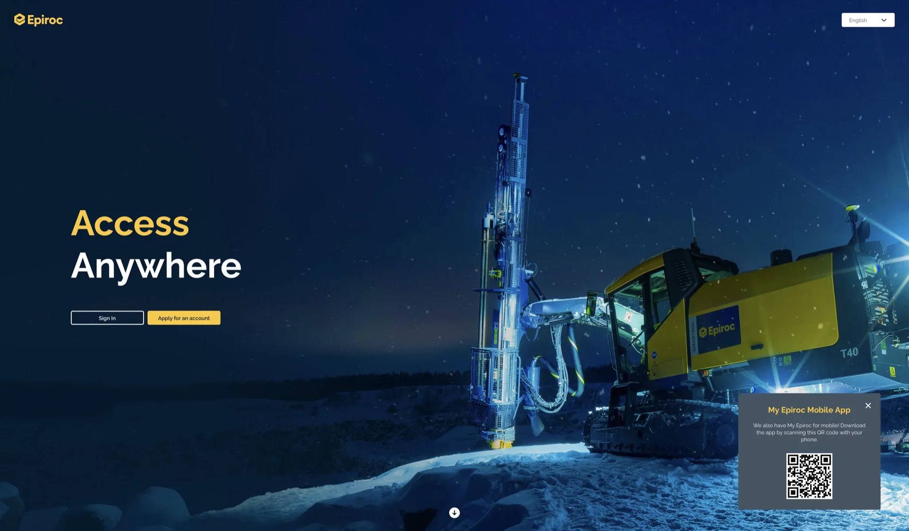
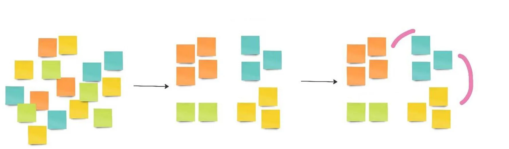
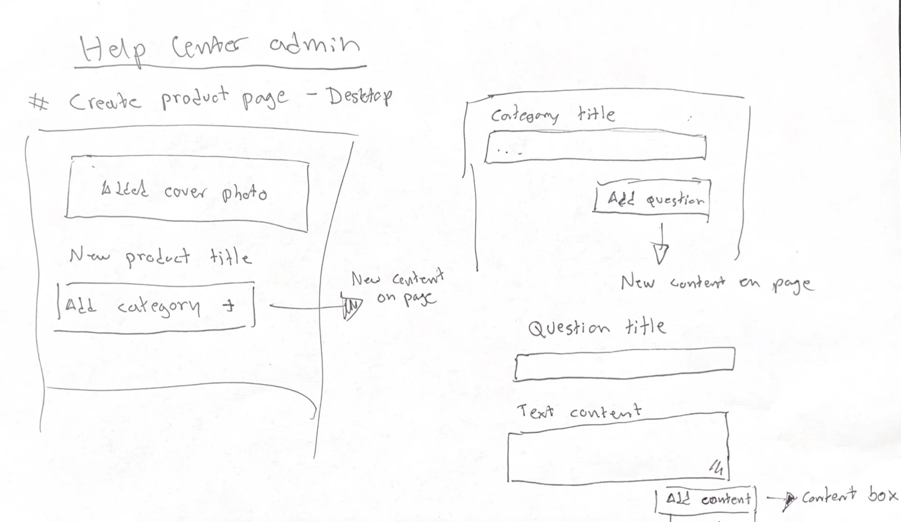
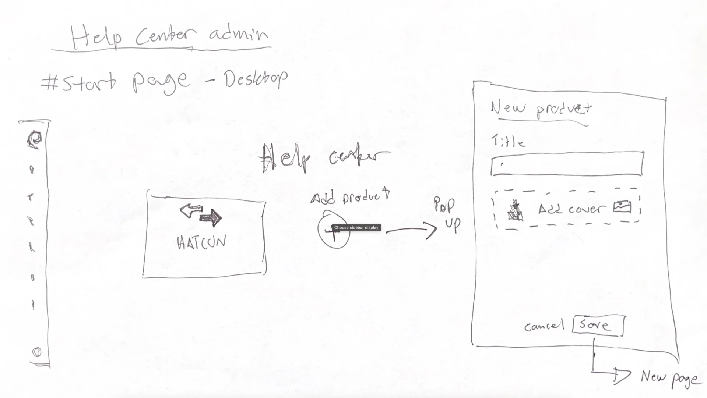
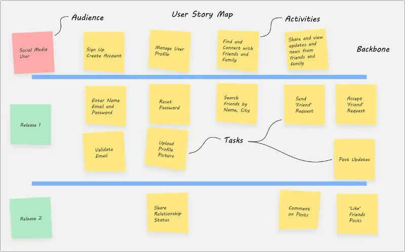

MyEpiroc is a large and versatile platform created for Epiroc, a leading manufacturer in the mining industry.
The platform is available on desktop, iOS, and Android. For Epiroc employees, it streamlines customer and user management, enables technical modules, product promotions, and FAQ maintenance. For customers, it provides real-time oversight of their equipment, enabling services, inspections, fault reporting, machine tracking, and efficient management of drilling and blasting operations.

While employed as a consultant at B3 Commit I spent two and a half years as a tester and designer on the MyEpiroc project. Initially, I worked as a co-designer alongside three others, but I quickly transitioned into the role of design lead within my team.
As a tester, I collaborated with two other testers, each responsible for the quality mindset and testing efforts within our respective teams. We also worked cross-team to exchange ideas, align efforts, and address any dependencies that we might have to one another. In the next section, I will outline the workflow and outcomes of my design and testing work for a module of the system called Help Center.
The Help Center was a newly introduced feature designed for both Epiroc employees and customers. It served as a centralised hub where users could access support for MyEpiroc, it’s tools, integration systems, equipment manuals, and more. Of course available in all supported languages.
We began our research by interviewing reference customers and Epiroc back-office staff to gather insights into their needs, problems and challenges. This approach helped us empathise with them and better understand their requirements & needs.
We collected both quantitative and qualitative data from our research. Using Miro we organised and analysed the data with digital post-it’s, created clusters of metrics, defining user roles, created user story maps and identified functions and pain points.

After analysing the research data and having had brainstorming sessions regarding how we could solve the problems that our customer and users where facing I started creating prototypes. Firstly on paper that I quickly ran by the team, then I’d move on to create them in Figma for more detailed feedback sessions with the team, our reference customers and users. We iterated with prototypes and user testing sessions until we achieved a something that we felt worked.


The design featured two main components: a content-management part for Epiroc users to manage content such as products, questions, media, links, styles, inline translations, and other resources, and a frontend portal where customers could easily search and access the help they needed.
Iteratively throughout the development cycle we broke the design into user story maps and value-sliced it to prioritise the tasks that delivered the most value with the least effort.
As a development team we worked with Extreme Programming in short iterations with frequent feedback loops, design updates, development, testing and customer demos. This approach allowed us to quickly validate whether we were on the right track and make necessary adjustments to the solution if needed.
The workflow of Extreme Programming minimised context switching, kept the everyone in the team aligned on what we where working on, kept everyone involved, reduced personal dependencies, and significantly reduced the number of bugs that reached end users.

Throughout the process, we maintained close communication with users, continuously gathering their feedback and incorporating it into our design prototypes and development iterations. We made frequent, small releases, ensuring users felt their feedback was valued and they remained involved throughout the process. During one particularly productive week, we completed 5 releases in 5 days, each delivering distinct value to different users, with no bugs* reported. We referred to this as our “perfect week.”
*Bugs were rarely reported during development or from production, though the absence of bugs doesn’t mean they don’t exist. However we experienced a huge increase in the overall quality when working with extreme programming instead of our old individual task-based workflow.